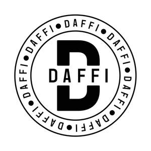

Trade Mark Journal No.2025/036 5 September 2025
UK00004219107 15 June 2025 (8)

- Class 8
- Carving knives; Fruit carving knives; Carving knives (Hand operated -) for household use; Carving forks; Knives; Diving knives; Kitchen knives; Filling knives; Filler knives; Chef knives; Razor knives; Vegetable knives; Steak knives; Sport knives; Drawing knives; Fruit knives; Bread knives; Whittling knives; Fishing knives; Butcher knives; Farriers' knives; Grafting knives; Pocket knives; Grapefruit knives; Cheese knives; Disposable knives; Palette knives; Hunting knives; Trimming knives; Carpet knives; Scaling knives; Paring knives; Peeling knives; Pen knives; Jack knives; Folding knives; Utility knives; Working knives; Butter knives; Throwing knives; Table knives; Stripping knives; Household knives; Putty knives; Sheath knives; Pruning knives; Gardeners' knives; Budding knives; Filleting knives; Ceramic knives; Biodegradable knives; mincing knives / fleshing knives / meat choppers being meat knives; Mincing knives / Fleshing knives / Meat choppers being meat knives; Sheaths for knives; Turnip cutters [knives]; Knives [hand tools]; Fish cleaning knives; choppers being knives; Knives being tableware; Hobby knives [scalpels]; Multi-tool knives; Sterling silver table knives; Kitchen knives (Non-electric -); Knives, forks and spoons; Fleshing knives [hand tools]; Mincing knives [hand tools]; Putty knives [hand tools]; Bread knives [hand operated]; Japanese chopping kitchen knives; Thin-bladed kitchen knives; Uncapping knives, non-electric; Knives for hobby use; Butchers' knives (Non-electric -); Fish slicing kitchen knives; Stainless steel table knives; Knives for skinning animals; Tableware [knives, forks and spoons]; Scoring knives for veneer sheets; Vegetable peelers [hand operated knives]; Knives made of precious metal; Pocket knives with multi-purpose attachments; Table cutlery [knives, forks and spoons]; Silver plate [knives, forks and spoons]; Sharpening wheels for knives and blades; Table knives, forks and spoons for babies; Plastic spoons, table forks and table knives; Table knives, forks and spoons of plastic; Baby spoons, table forks and table knives.
DAFFI LTD